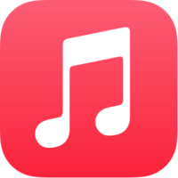

|
Stream / Download Them NOW:



My Albums:
The First Collection

The First Collection follows a period from about 2012 to 2016 which originally were on albums of thier own but ...
stupid names, stupid track layouts, songs that shouldn't have been there, really. So rather than have separate
albums cluttering up the place (also with stupid album art) I decided to just select those I'm most fond of,
and have them as part of two collections (The Second Collection being the other).
While you could call this a compilation - and it kind of is a collection of material from 2010 to 2016-ish,
to me its just an album of material that was written during that period of time.
All of these songs, without exception, were done in a program called Reason. It was the first program I ever had any experience using
(albeit it a much earlier version) and so when I was looking for software, I got this one. It's hard for me to recommend it today
as I have not really used any kind of up to date version beyond Reason 10 - I have no idea what current state it's in.
Unfortunately, almost none of the source files for this album can be found. I used to have a stupid mindset where (on older computers)
space was at a premium, and keeping things I didn't need was just taking up space that I needed - although to be fair to myself,
I did also loose a bunch of files when a 250GB drive crashed on me. But I was (at the time) like "well I've finished it, why would
I ever need to go back into it?"
-_- Dear oh dear.
Ophelia EP

This was written around 2017 before (and after) the birth of my now oldest daughter.
It contains the longest song I have ever written, done as an experiment with key changes
and repeating patterns and in a way my own kind of Tubular Bells. At 5 tracks it isn't
long and I can't remember the reason for it being short, possibly I felt like I wanted
to release it around when she was born and ran out of time. Again, all of them were done
in Reason and amazingly all but one of the source files still exist. Usually everything was
done in Reason rather than additional programs because the version that I had, you could not
bounce out the tracks (bouncing is when you tell the program to render each of the individual
tracks of the song so you have all of the separate elements of it that can then be taken into a
program to mix, etc). Frustratingly, GarageBand, despite being a pretty good resource,
also can't (currently) do this. You have to do each track one by one.
The Second Collection

Much like the first Collection this is a collection of material from around 2016 to 2019-ish.
The large majority of it was written using Reason but this time I started to use a few other things.
Having a child and not always having access to a PC I went looking for apps that might allow me to
accomplish the same thing. I found two on Android: Caustic3 (which I'm pretty sure the developer has abandoned)
and FL Studio. Caustic3 is/was rack based very much like Reason was and so it
very quickly made sense and I started working on things. Sound quality isn't quite up to
par of other apps or programs, although you can use samples - still, I made a few tracks using it one of which
(Vendetta) appears on this album. Music making on Android (which is what I had at the time) while
possible, often just flat out isn't supported because of the sheer number of potential Android devices
and different sound hardware - you can't account for all of them and you can't make it consistent across all of them.
What might work well on one, won't work well on another, etc.
Elliot

Before my first daughter was born we'd had a stillborn son in 2015 and I'd wanted to do something that invoked the sadness that I felt at his loss. It took a very long time and it wasn't until I wrote the song Elliot that I felt like I had achieved that.
The album was more or less written very quickly during that time. I'd gone back to Reason for this one, with a couple of assists from Caustic3. I know I had FL Studio downloaded, for some reason I never seemed to use it or do anything with it on Android. Looking back I don't know why I chose to name albums after my children, I suppose it's an easy title as any and it has significance for me.
Since I pretty much just do all of my music for me anyway ... why not?
-
Before being uploaded for distribution, this originally had a track called "No I'm Doesn't" which contained samples from Futurama. Its original title was to be "The Ballad of Fry and Leela" but I quickly realised I would not be able to do that justice. Today it exists on the Lost Planet album as a track called "Fry's Holophoner" sans samples. If you know, you know.
Luna

Work on this one was done in 2018 before, during and after the birth of my youngest daughter, it contains some of my favourite songs that are just fun and were fun to write.
The cover of the album is a photo that I took, of the moon, from the hospital when she was born, hence her name.
-
There are some differences here between distributed and Bandcamp: the Bandcamp version has two songs (one called "A New Dawn" and another called "See Tomorrow") which were removed for thier vocal samples and replaced with two tracks from the EP 2021 called "Yeah Boing" and "Belong". Not sure why I removed "See Tomorrow" since the sample is not copyrighted at all, it just seemed that if a song had vocals in it, thier system didn't like it when you couldn't prove you could use it. A New Dawn was removed because it contained a sample of Rob Swire. Some would probably say that "Gaslighting" is the highlight from this album but honestly its the most dull song on thier IMO.
33

Written from the end of 2020 to 2021 , this marked a change in sound for me. Where traditionally I'd used a desktop computer and software on that, I switched to using an iPad and iPhone and two pieces of software - GarageBand and FL Studio. All of this album was written in GarageBand.
It was named 33 because that year I turned 33 and because it happens to be one of the speeds (well, 33 1/3) of a vinyl record. Hence the album cover, which is actually me holding up Eminem's "Music To Be Murdered By" lovely transparent "Black Ice" record - although none of that is visible, so you'd never have known if I didn't tell you ;)
EP 2021

This was done in 2021 as a fun project to get to grips with FL Studio - having previously bought it and then never used it on Android, I then bought it again on iOS and this time decided to do something with it.
I used a few heavily sampled ideas and things to work around and the result was this small collection of songs - due to thier nature being copyrighted and such, they are not on Apple Music, Spotify or Amazon Music. Lest I profit from someone elses work in a commercial manner.
Lost Planet

Almost everything on this album is from FL Studio and was written at the end of 2021 and into 2022.
Continuing the sound that emerged during the album "33" and "EP 2021" it is much more energetic, frenetic, and somewhat dark.
It isn't strictly all new material - three songs containing vocals have found a place here, after being sat in the void for a very very long time. They seemed to fit the mood of the album, and so I included them.
I wish more often that my work could have a voice, but I'm not a singer and finding one to work on material basically only me would listen to is probably not that easy. Having said that, a song from Luna (or if you're on Bandcamp EP 2021) called "Belong" has my voice on it. Its just heavily processed and roboticized (if thats even a word). In fact I think each verse is tuned specifically to the notes it (me) "sings". You can't tell its me. But its me. Well, like 20% me, 80% robot effect from GarageBand.
Strings
(Or, the time I made a metal album)

These songs have been around for a number of years not really doing anything.
I started out as a guitar player and had some equipment a while ago to do some recording. The best thing I can say is that I got it out of my system.
Recording rock/metal or any kind of music where you want to give the impression of a band setup is just tedious as all hell. Why? Because you have to create EVERYTHING. Drums. Bass. Rhythm Guitar. And then you need to double track that because you've got two guitarists in your band, right? Lead guitar and any solos. And clean and effects guitars. Potential synths if any. One person doing all of that is hard. And tedious. But mainly hard. I also knew nothing about mixing properly or recording properly so its amazing any of these even came out in any form of good shape, and yet most of them seem to have.
I realise reading this that when making digital music you also have to write and create every individual element, but it just doesn't seem as tedious to me.
Dark Matters

This album is by and large the result of a huge effort in terms of tracking down every single song I've written, every file, every project, everything and anything and organising it all - something that should have been done a long time ago but was only done this year.
It contains the final bunch of Reason songs from days of yore as well a few newer ones that were finished more recently.
EP 2022

EP 2022 was made very quickly (ideas seemingly were tumbling out) and are a mix of GarageBand, PC based stuff which I have recently gotten back into.
I also managed to find a VST that emulates the sounds from a Sega MegaDrive(Genesis) which I put to good use.
Black Light

This album was written during 2022 and uses a combination of PC work as well as iPhone/iPad work (GarageBand with a host of AU plugins).
As far as the PC goes, I ditched Reason - I've been using since I first started writing music on a computer and it just ... I wanted a change. So I switched to another program I've always used for mixing and editing and completely ignored as far as midi recording and such: MixCraft.
A wonderfully capable and compatible DAW with a great work flow ... its just easy to use. Also cheap. if anyone was looking for one :)
|